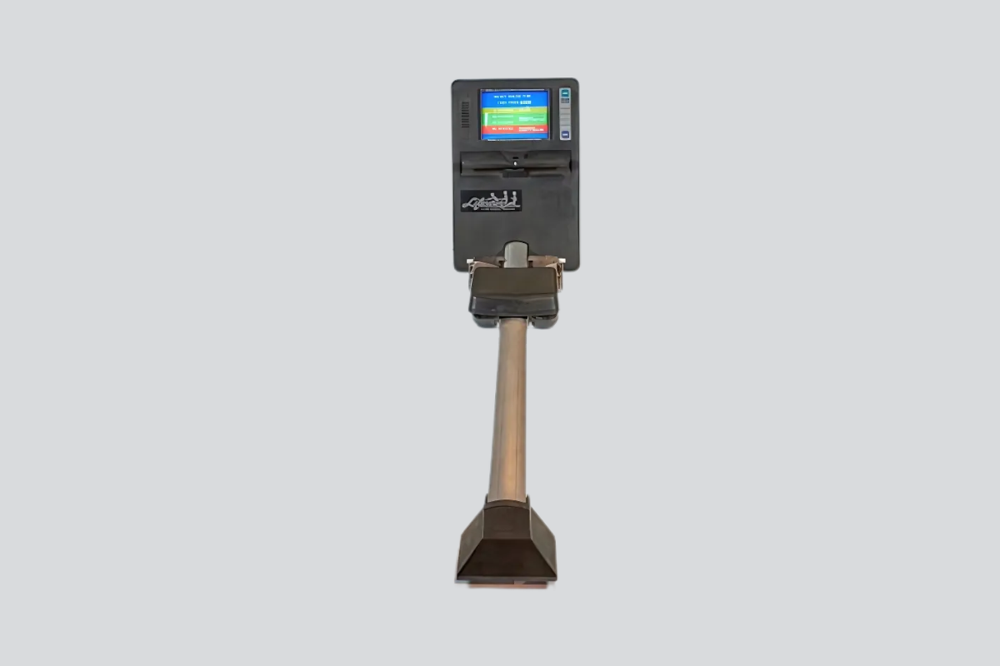
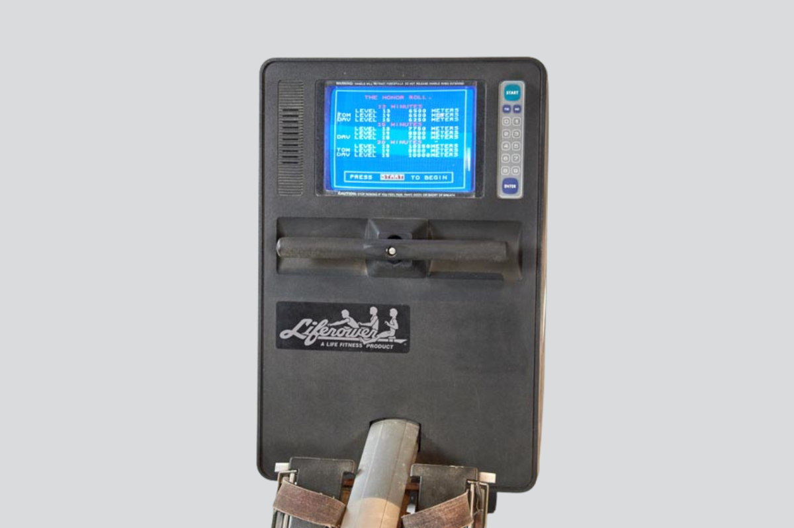

LifeRower
The rowing machine that was also a video game console — full-body exergaming, 20 years before the Wii

Overview
The LifeRower was a commercial rowing machine with a built-in color CRT monitor and microprocessor-based video game system, released in 1986 by Life Fitness, the fitness equipment division of Bally Manufacturing Corporation. Unlike typical exercise equipment, the LifeRower used the rowing motion itself as the game controller — pulling the handle against magnetic particle brake resistance directly controlled on-screen boat speed, while a stroke-detection switch synchronized the on-screen rower's animation to the user's actual body motion. It was sold primarily to commercial gyms at an estimated $2,000–3,000 and represents one of the earliest commercially released devices where sustained physical exertion was the primary continuous game input.
Deep dive
The LifeRower was developed by Bally Manufacturing, the Chicago-based company best known for arcade games (Space Invaders, Pac-Man licensing) and pinball machines, through its Life Fitness division. US Patent 4,674,741 ("Rowing machine with video display") was filed on August 5, 1985, by six inventors — John J. Pasierb Jr., Augustine Nieto, Bryan Andrus, George Kolomayets, Gary Oglesby, and Allen Ryan — and issued on June 23, 1987. The LifeRower was part of a family of three Bally/Life Fitness exergame products alongside the LifeRacer (exercise bike with racing game, 1989) and the unreleased LifeRider (a 2-player arcade exergame cabinet prototyped at Bally Sente).
The LifeRower's computer system was built around a Motorola 6809 microprocessor — one of the most advanced 8/16-bit CPUs of its era — with system ROM (two chips storing program code, graphics, animation frames, and sound data), RAM, and two Motorola 6821 Peripheral Interface Adapters handling all I/O. A Texas Instruments TMS9918-family Video Display Processor drove the built-in color CRT monitor at 256×192 pixels with 15 colors. Sound was generated by a General Instruments sound chip (likely AY-3-8910) driving a 3×5-inch, 8-ohm speaker. A German-language version was produced, indicating international distribution.
Two independent sensor systems measured the user's physical effort. First, an optical encoder on the master shaft — a notched wheel passing through a photointerrupter (LED emitter + light sensor) — generated a pulse train whose frequency was proportional to shaft RPM, directly determining on-screen boat speed. Second, a mechanical microswitch actuated by a cam mechanism linked to the cable drum detected the beginning of each stroke, synchronizing the on-screen rower's animation with the user and enabling stroke-rate calculation (running average over the last 4 strokes).
Rather than using alternator-based resistance (which increases with speed), the LifeRower employed a Model B-5 magnetic particle brake by Magnetic Power Systems, Inc. This provided constant-torque braking independent of rotational velocity, controllable in 10 mA steps via a 4-bit DAC (0–150 mA). The microprocessor could dynamically adjust brake force based on difficulty level or whether the user was in the power versus return portion of a stroke. The cast-iron flywheel preserved angular momentum during the return stroke via a one-way clutch, simulating boat coast.
"Pacer" mode was a competitive boat race: the player's boat (labeled "YOU") raced against a computer-paced boat on a scrolling waterway with buoys, parallax-scrolling shorelines (near and far, moving at different rates), a cityscape background, and mileage signs. An on-screen dashboard displayed stroke rate, calories burned, distance, and boat lengths ahead or behind. Twelve difficulty levels offered race durations from 1 to 20 minutes. A starting-gun animation with nautical bells, crowd cheers, and text commands ("Mark," "Get Set," "Go") initiated each race. "Shark Chase" required maintaining a steady pace to stay ahead of a pursuing shark. A pre-exercise animated tutorial demonstrated proper rowing form with step-by-step text prompts.
Priced at an estimated $2,000–3,000 (1986 dollars), the LifeRower was sold primarily to commercial gyms rather than home consumers. It was in regular use at some gyms into the 1990s. No precise sales figures survive, but the existence of a German-language version, surviving service manuals, and replacement parts availability suggest some level of sustained deployment. Augustine Nieto, one of the patent co-inventors, later became CEO of Life Fitness (2007–2017) and founded the connected-fitness startup Ergatta. One unit is preserved at the National Videogame Museum (UK), accession SHEVG.2024.11. The LifeRower predates the modern Peloton/Nintendo Ring Fit era by 35 years and represents the first commercially released device where full-body sustained physical exertion was the primary continuous input to a video game.
Team & pioneers
- Bally Manufacturing Corporation. Chicago-based parent company (1932–2014). Famous for arcade games, pinball machines, and casino/hotel operations. Held US Patent 4,674,741 for the LifeRower.
- Life Fitness, Inc. Originally Lifecycle, Inc., acquired by Bally in 1984 and renamed. Fitness equipment division that manufactured and marketed the LifeRower. Based in Franklin Park, IL.
- John J. Pasierb Jr. Primary inventor on US Patent 4,674,741.
- Augustine Nieto. Co-inventor. Later CEO of Life Fitness (2007–2017) and founder of connected-fitness startup Ergatta.
- Bryan Andrus, George Kolomayets, Gary Oglesby, Allen Ryan. Co-inventors on the LifeRower patent.
Media

Sources
- US Patent 4,674,741 — "Rowing machine with video display" (Bally Manufacturing Corp., filed Aug 1985, issued Jun 1987)
- National Videogame Museum (UK) — LifeRower object record (SHEVG.2024.11)
- Life Fitness corporate history — 1980s timeline (archived)
- Undumped Wiki — LifeRower technical documentation, screenshots, and revision history
- Arcade-Museum.com forum — user recollections of LifeRowers in gyms during the 1990s
- FitnessRepairParts.com — LR-8500/9500 parts catalog documenting mechanical and electrical components
- Arcade Heroes — Midway/Bally prototype article confirming unreleased LifeRider sibling (May 2013)